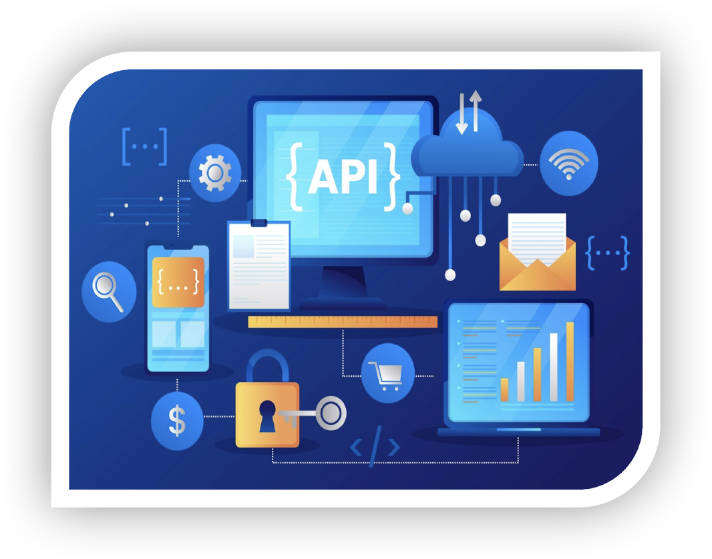

我們主要提供數位轉型顧問、IT架構現代化、資訊數據化處理、API管理與網路系統串接等服務，協助各企業軟件串接之解決方案與系統運用服務。
特別專精於研擬解決方案，跨平台支付等系統，整合與推廣相關軟體系統 「客戶服務管理平台」、「集中管理平台」、「監控管理系統」以及相關串接及管理服務與解決問題的客戶諮詢服務。
以協助客戶實現數位科技夢想為企業宗旨，為企業量身打造多雲服務架構，建置完整雲端生態系。
以嚴謹與效率兼具的軟體工程方法，成熟的專案管理與稽核、品保流程，提供最高品質軟體開發業務，實現數位科技落地應用，協助客戶創造商機價值。
針對資料的即時整合與檢索需求與日俱增，但常常缺乏適合的工具與有經驗的團隊來規劃系統與解決問題，提供各產業的客戶多元且便捷的解決方案。
數位轉型顧問
資訊數據化處理
API管理與網路系統串接
IT架構現代化
數位轉型顧問
數位轉型，指企業將數位科技整合到各營運流程，使原本的傳統業務轉變為數位型業務。
以技術顧問作為專業利基，提供企業數位轉型、架構設計與開發技術服務，從目標制定、策略規劃到實踐落地解決方案，協助企業從策略轉化行動到量化績效指標，為企業奠定穩健的數位轉型旅程。
顧問團隊協助企業評估雲端應用成熟度、基礎建設與網路系統、風險評估等。提出相關可行性及遷移策略，使企業在進行雲端搬遷前，能更了解目前內部技術環境狀況，及雲端服務供應商採購策略與建議。
資訊數據化處理
元資料管理
元資料掃描、查詢及維護、差異比對、資料標準管理
自助資料擷取
挑選欄位、資料整合處理、篩選資料匯出
資料品質管理
資料剖析、品質規則設定、品質規則排程及異常告警
系統管理
使用者操作軌跡查詢、查詢權限管理、AD整合
資料安全管理
屏蔽規則設定、屏蔽紀錄查詢、加密機制管理
API管理與網路系統串接
IT架構現代化
協助企業優化 IT 架構，包括雲端搬遷、跨雲整合、應用程式優化等現代化技術服務，將現有架構與商業情境連結，打造具競爭力的企業靈活與創新。
現在人人都在討論的AI轉型，其實已經是「數位轉型CBA三部曲」中的第三步。如果想知道AI轉型如何更順利，必須要從頭疏理轉型脈絡。
所謂的三部曲，指的是C（雲端，Cloud）、B（大數據，Big Data）、A（人工智慧，AI）。雲端的搭建提供大量算力，藉此才能構建出大量網頁、手機應用程式，將轉型推進到第二步，也就是取得大量的消費者數據。
最終，我們需要依靠前兩個階段累積的算力以及數據，訓練出有用的AI，完成數位轉型。既然台灣沒有具規模的雲端服務公司，自然無法擁有大量數據，因此在AI轉型時陷入了困境。
台灣並不孤單，全球除了中國和美國，大部份國家都面臨了相同的問題。不過近年來，韓國憑藉著電商酷澎、通訊軟體Kakao和Line，成功打造崛起契機。
 04-22548568
04-22548568